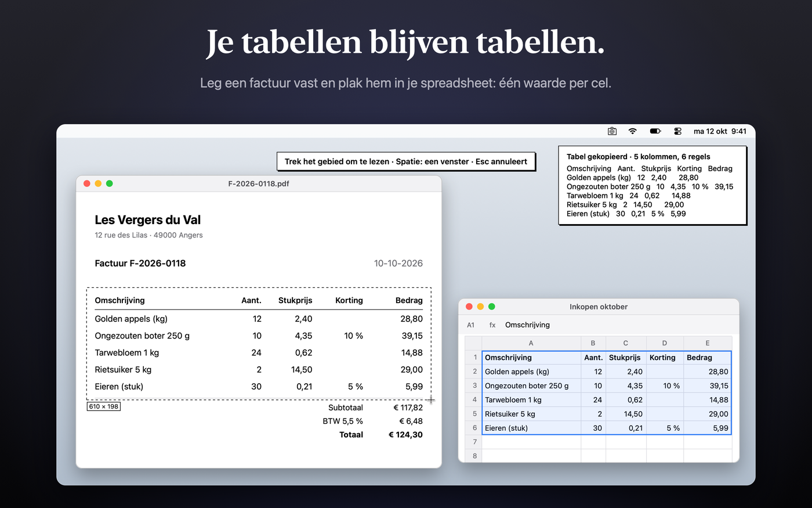
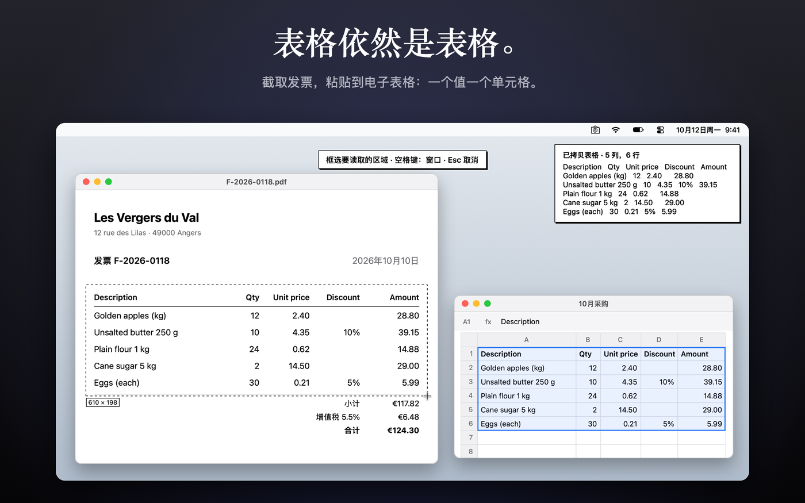
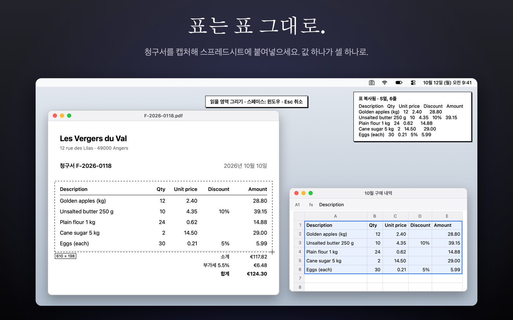

Kare
Capture, with care.
Copy a table from an image or a PDF into Excel or Numbers
A table in a PDF, a scanned invoice, a screenshot or a web page usually pastes as one block of text. Kare reads it as a table: paste it into Excel or Numbers and each value lands in its own cell.
In three steps
- Press ⇧⌘2 and draw over the table on your screen (a PDF in Preview, an image, a web page, an app).
- Kare reads it on your Mac and shows “Table copied”, with its number of columns and rows.
- Paste into Excel, Numbers or Google Sheets: one value per cell. In Mail, Notes or Pages it pastes as a real table.
Already have the file?
Copy the image or PDF in the Finder (⌘C), then press ⌃⌘J: Kare reads up to 10 files at once, including scans and PDFs of up to 10 pages.
For the best result
- Capture the table area only, not the whole page: addresses and footers mix several layouts.
- Very small print? Zoom in on screen first: on tiny print, Kare asks you to check rather than copy a possible mistake.
- A single digit alone in a cell (a quantity of “6”, say) can be missed by text recognition: check one-digit quantities.
Private by design
The table is read by macOS, on your Mac. No account, no upload, nothing sent anywhere.
14-day free trial, then a lifetime license for 1 €. macOS 14 or later, Apple silicon.
Copier un tableau d'une image ou d'un PDF dans Excel ou Numbers
Un tableau dans un PDF, une facture scannée, une capture ou une page web se colle d'habitude en un seul bloc de texte. Kare le lit comme un tableau : collé dans Excel ou Numbers, chaque valeur arrive dans sa case.

En trois gestes
- Appuyez sur ⇧⌘2 et tracez une zone sur le tableau à l'écran (un PDF dans Aperçu, une image, une page web, une app).
- Kare le lit sur votre Mac et affiche « Tableau copié », avec son nombre de colonnes et de lignes.
- Collez dans Excel, Numbers ou Google Sheets : une valeur par case. Dans Mail, Notes ou Pages, il se colle en vrai tableau.
Vous avez déjà le fichier ?
Copiez l'image ou le PDF dans le Finder (⌘C), puis appuyez sur ⌃⌘J : Kare lit jusqu'à 10 fichiers d'un coup, scans et PDF de 10 pages au plus compris.
Pour un résultat net
- Capturez la zone du tableau seulement, pas la page entière : adresses et pieds de page mélangent plusieurs mises en page.
- Caractères très petits ? Zoomez d'abord à l'écran : sur de tout petits caractères, Kare vous demande de vérifier au lieu de copier une erreur possible.
- Un chiffre seul dans une case (une quantité « 6 », par exemple) peut échapper à la reconnaissance : vérifiez les quantités à un chiffre.
Privé par conception
Le tableau est lu par macOS, sur votre Mac. Pas de compte, aucun envoi.
Essai gratuit de 14 jours, puis une licence à vie à 1 €. macOS 14 ou plus récent, puce Apple.
Tabelle aus einem Bild oder PDF in Excel oder Numbers kopieren
Eine Tabelle in einem PDF, eine gescannte Rechnung, ein Screenshot oder eine Webseite wird meist als ein einziger Textblock eingefügt. Kare liest sie als Tabelle: In Excel oder Numbers landet jeder Wert in seiner eigenen Zelle.

In drei Schritten
- Drücken Sie ⇧⌘2 und ziehen Sie einen Bereich über die Tabelle auf dem Bildschirm (ein PDF in der Vorschau, ein Bild, eine Webseite, eine App).
- Kare liest sie auf Ihrem Mac und zeigt „Tabelle kopiert“ mit der Anzahl der Spalten und Zeilen.
- Fügen Sie sie in Excel, Numbers oder Google Sheets ein: ein Wert pro Zelle. In Mail, Notizen oder Pages wird daraus eine echte Tabelle.
Sie haben die Datei schon?
Kopieren Sie das Bild oder PDF im Finder (⌘C) und drücken Sie dann ⌃⌘J: Kare liest bis zu 10 Dateien auf einmal, auch Scans und PDFs mit bis zu 10 Seiten.
Für ein gutes Ergebnis
- Nehmen Sie nur den Tabellenbereich auf, nicht die ganze Seite: Adressen und Fußzeilen mischen mehrere Layouts.
- Sehr kleine Schrift? Zoomen Sie zuerst am Bildschirm: Bei winziger Schrift bittet Kare Sie um eine Prüfung, statt einen möglichen Fehler zu kopieren.
- Eine einzelne Ziffer allein in einer Zelle (z. B. die Menge „6“) kann von der Texterkennung übersehen werden: Prüfen Sie einstellige Mengen.
Privat von Grund auf
Die Tabelle wird von macOS auf Ihrem Mac gelesen. Kein Konto, kein Upload, nichts wird irgendwohin gesendet.
14 Tage kostenlos testen, danach eine lebenslange Lizenz für 1 €. macOS 14 oder neuer, Apple Silicon.
Copiar una tabla de una imagen o un PDF a Excel o Numbers
Una tabla en un PDF, una factura escaneada, una captura o una página web suele pegarse como un único bloque de texto. Kare la lee como tabla: al pegarla en Excel o Numbers, cada valor cae en su propia celda.

En tres pasos
- Pulsa ⇧⌘2 y dibuja una zona sobre la tabla en pantalla (un PDF en Vista Previa, una imagen, una página web, una app).
- Kare la lee en tu Mac y muestra «Tabla copiada», con su número de columnas y filas.
- Pega en Excel, Numbers o Google Sheets: un valor por celda. En Mail, Notas o Pages se pega como una tabla de verdad.
¿Ya tienes el archivo?
Copia la imagen o el PDF en el Finder (⌘C) y pulsa ⌃⌘J: Kare lee hasta 10 archivos a la vez, incluidos escaneos y PDF de hasta 10 páginas.
Para un buen resultado
- Captura solo la zona de la tabla, no la página entera: las direcciones y los pies de página mezclan varios diseños.
- ¿Letra muy pequeña? Amplía primero en pantalla: con letra diminuta, Kare te pide que lo compruebes en lugar de copiar un posible error.
- Una cifra sola en una celda (una cantidad de «6», por ejemplo) puede escaparse al reconocimiento de texto: comprueba las cantidades de una cifra.
Privado por diseño
La tabla la lee macOS, en tu Mac. Sin cuenta, sin subidas, no se envía nada a ningún sitio.
Prueba gratuita de 14 días y después una licencia de por vida por 1 €. macOS 14 o posterior, chip Apple.
Copiare una tabella da un'immagine o da un PDF in Excel o Numbers
Una tabella in un PDF, una fattura scansionata, uno screenshot o una pagina web di solito si incolla come un unico blocco di testo. Kare la legge come tabella: incollata in Excel o Numbers, ogni valore finisce nella propria cella.

In tre passaggi
- Premi ⇧⌘2 e traccia un'area sulla tabella sullo schermo (un PDF in Anteprima, un'immagine, una pagina web, un'app).
- Kare la legge sul tuo Mac e mostra «Tabella copiata», con il numero di colonne e righe.
- Incolla in Excel, Numbers o Google Sheets: un valore per cella. In Mail, Note o Pages si incolla come una vera tabella.
Hai già il file?
Copia l'immagine o il PDF nel Finder (⌘C), poi premi ⌃⌘J: Kare legge fino a 10 file alla volta, comprese scansioni e PDF fino a 10 pagine.
Per un buon risultato
- Cattura solo l'area della tabella, non l'intera pagina: indirizzi e piè di pagina mescolano più impaginazioni.
- Caratteri molto piccoli? Ingrandisci prima sullo schermo: con caratteri minuscoli, Kare ti chiede di controllare invece di copiare un possibile errore.
- Una cifra isolata in una cella (una quantità «6», ad esempio) può sfuggire al riconoscimento del testo: controlla le quantità di una sola cifra.
Privato per progetto
La tabella viene letta da macOS, sul tuo Mac. Nessun account, nessun caricamento, nulla viene inviato altrove.
Prova gratuita di 14 giorni, poi una licenza a vita a 1 €. macOS 14 o successivo, chip Apple.
Copiar uma tabela de uma imagem ou PDF para o Excel ou Numbers
Uma tabela em um PDF, uma fatura digitalizada, uma captura de tela ou uma página da web costuma ser colada como um único bloco de texto. O Kare a lê como tabela: ao colar no Excel ou Numbers, cada valor vai para a sua própria célula.

Em três passos
- Pressione ⇧⌘2 e desenhe uma área sobre a tabela na tela (um PDF na Pré-Visualização, uma imagem, uma página da web, um app).
- O Kare a lê no seu Mac e mostra “Tabela copiada”, com o número de colunas e linhas.
- Cole no Excel, Numbers ou Google Sheets: um valor por célula. No Mail, Notas ou Pages, ela é colada como uma tabela de verdade.
Já tem o arquivo?
Copie a imagem ou o PDF no Finder (⌘C) e pressione ⌃⌘J: o Kare lê até 10 arquivos de uma vez, incluindo digitalizações e PDFs de até 10 páginas.
Para um bom resultado
- Capture apenas a área da tabela, não a página inteira: endereços e rodapés misturam vários layouts.
- Letra muito pequena? Aumente o zoom na tela antes: com letras minúsculas, o Kare pede que você confira em vez de copiar um possível erro.
- Um dígito sozinho em uma célula (uma quantidade “6”, por exemplo) pode escapar do reconhecimento de texto: confira as quantidades de um dígito.
Privado por princípio
A tabela é lida pelo macOS, no seu Mac. Sem conta, sem envio, nada é enviado a lugar nenhum.
Teste grátis de 14 dias, depois uma licença vitalícia por 1 €. macOS 14 ou posterior, chip Apple.
Een tabel uit een afbeelding of pdf kopiëren naar Excel of Numbers
Een tabel in een pdf, een gescande factuur, een schermafbeelding of een webpagina wordt meestal als één blok tekst geplakt. Kare leest hem als tabel: geplakt in Excel of Numbers komt elke waarde in zijn eigen cel.

In drie stappen
- Druk op ⇧⌘2 en trek een gebied over de tabel op je scherm (een pdf in Voorvertoning, een afbeelding, een webpagina, een app).
- Kare leest hem op je Mac en toont “Tabel gekopieerd”, met het aantal kolommen en rijen.
- Plak in Excel, Numbers of Google Sheets: één waarde per cel. In Mail, Notities of Pages wordt het een echte tabel.
Heb je het bestand al?
Kopieer de afbeelding of pdf in de Finder (⌘C) en druk dan op ⌃⌘J: Kare leest tot 10 bestanden tegelijk, inclusief scans en pdf's van maximaal 10 pagina's.
Voor het beste resultaat
- Leg alleen het tabelgebied vast, niet de hele pagina: adressen en voetteksten mengen meerdere opmaken.
- Heel kleine letters? Zoom eerst in op het scherm: bij piepkleine letters vraagt Kare je te controleren in plaats van een mogelijke fout te kopiëren.
- Een los cijfer in een cel (bijvoorbeeld een hoeveelheid “6”) kan door de tekstherkenning gemist worden: controleer hoeveelheden van één cijfer.
Privé door ontwerp
De tabel wordt door macOS gelezen, op je Mac. Geen account, geen upload, er wordt niets verstuurd.
14 dagen gratis proberen, daarna een licentie voor altijd voor 1 €. macOS 14 of nieuwer, Apple-chip.
画像やPDFの表をExcelやNumbersにコピー
PDF、スキャンした請求書、スクリーンショット、Webページの表は、ふつう1つの文字の塊として貼り付けられます。Kareは表として読み取るので、ExcelやNumbersに貼り付けると、値がそれぞれのセルに入ります。
3つのステップ
- ⇧⌘2を押して、画面上の表を囲みます（プレビューのPDF、画像、Webページ、アプリなど）。
- KareがMac上で読み取り、列数と行数とともに「表をコピーしました」と表示します。
- Excel、Numbers、Google Sheetsに貼り付けると、1つの値が1つのセルに入ります。メール、メモ、Pagesでは本物の表として貼り付けられます。
すでにファイルがある場合
Finderで画像やPDFをコピー（⌘C）してから⌃⌘Jを押すと、Kareが最大10ファイルをまとめて読み取ります。スキャンや10ページまでのPDFも対象です。
きれいに読み取るコツ
- ページ全体ではなく、表の部分だけをキャプチャしてください。住所やフッターがあると、複数のレイアウトが混ざります。
- 文字がとても小さい場合は、先に画面を拡大してください。小さすぎる文字では、誤りの可能性があるものをコピーせず、Kareが確認を求めます。
- セルの中の1桁だけの数字（たとえば数量の「6」）は、文字認識で見落とされることがあります。1桁の数量は確認してください。
プライバシーを第一に
表はMac上でmacOSが読み取ります。アカウントもアップロードも不要で、何も送信されません。
14日間の無料体験、その後は1 €の買い切りライセンス。macOS 14以降、Appleシリコン。
将图片或 PDF 中的表格复制到 Excel 或 Numbers
PDF、扫描的发票、截图或网页中的表格，粘贴时通常变成一整块文字。Kare 会把它当作表格来读取：粘贴到 Excel 或 Numbers 后，每个值各占一个单元格。

三步完成
- 按下 ⇧⌘2，在屏幕上框选表格（“预览”中的 PDF、图片、网页或 App）。
- Kare 在你的 Mac 上读取，并显示“已拷贝表格”，同时显示列数和行数。
- 粘贴到 Excel、Numbers 或 Google Sheets：每个单元格一个值。在“邮件”、“备忘录”或 Pages 中，会粘贴为真正的表格。
已经有文件了？
在“访达”中拷贝图片或 PDF（⌘C），然后按下 ⌃⌘J：Kare 一次最多读取 10 个文件，包括扫描件和最多 10 页的 PDF。
获得更好的效果
- 只截取表格区域，不要截取整页：地址和页脚会混入多种版式。
- 字很小？先在屏幕上放大：字太小时，Kare 会请你核对，而不是拷贝可能出错的内容。
- 单元格中单独的一位数字（例如数量“6”）可能被文字识别漏掉：请核对一位数的数量。
天生注重隐私
表格由 macOS 在你的 Mac 上读取。无需账户，无需上传，不会发送到任何地方。
免费试用 14 天，之后永久许可 1 €。需要 macOS 14 或更高版本，Apple 芯片。
이미지나 PDF의 표를 Excel 또는 Numbers로 복사하기
PDF, 스캔한 청구서, 스크린샷, 웹 페이지의 표는 보통 하나의 텍스트 덩어리로 붙여 넣어집니다. Kare는 표로 읽어 냅니다. Excel이나 Numbers에 붙여 넣으면 값마다 각자의 셀에 들어갑니다.

세 단계로
- ⇧⌘2를 누르고 화면의 표 위에 영역을 그리세요(미리보기의 PDF, 이미지, 웹 페이지, 앱).
- Kare가 Mac에서 읽고 열 수와 행 수와 함께 “표 복사됨”을 표시합니다.
- Excel, Numbers 또는 Google Sheets에 붙여 넣으면 셀마다 값이 하나씩 들어갑니다. 메일, 메모, Pages에서는 진짜 표로 붙여 넣어집니다.
이미 파일이 있나요?
Finder에서 이미지나 PDF를 복사(⌘C)한 다음 ⌃⌘J를 누르세요. Kare가 한 번에 최대 10개 파일을 읽으며, 스캔과 10페이지 이하의 PDF도 포함됩니다.
더 좋은 결과를 위해
- 페이지 전체가 아니라 표 영역만 캡처하세요. 주소와 바닥글에는 여러 레이아웃이 섞여 있습니다.
- 글자가 아주 작나요? 먼저 화면을 확대하세요. 글자가 너무 작으면 Kare는 오류일 수 있는 내용을 복사하는 대신 확인을 요청합니다.
- 셀에 혼자 있는 한 자리 숫자(예: 수량 “6”)는 텍스트 인식에서 놓칠 수 있습니다. 한 자리 수량은 확인하세요.
설계부터 비공개
표는 Mac에서 macOS가 읽습니다. 계정도, 업로드도 필요 없으며 어디로도 전송되지 않습니다.
14일 무료 체험 후 1 €의 평생 라이선스. macOS 14 이상, Apple 실리콘.